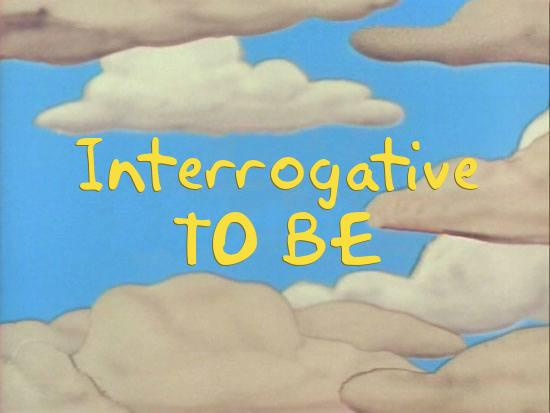

We can use the verb To Be to form questions too.
To form a question, we change the position of the verb To Be and the subject. Look at the example.
Lisa is happy.  Is Lisa happy?
Is Lisa happy?
Yes, she is.
No, she isn't.
Here you have a table with the correct form of questions using the verb To Be.
| I am | Am I? |
| You are | Are you? |
| She is | Is she? |
| He is | Is he? |
| It is | Is it? |
| We are | Are we? |
| They are | Are they? |
Problems with vocabulary?